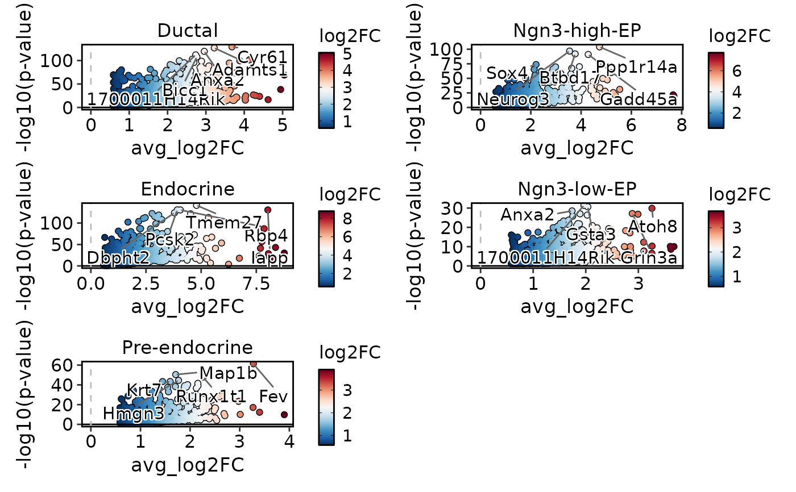
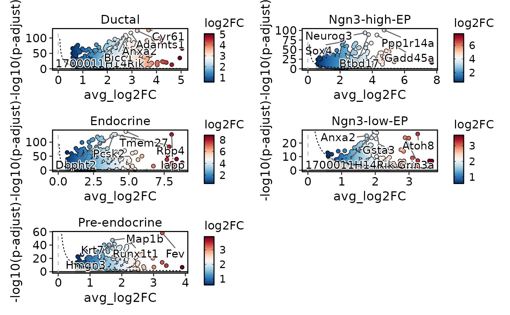
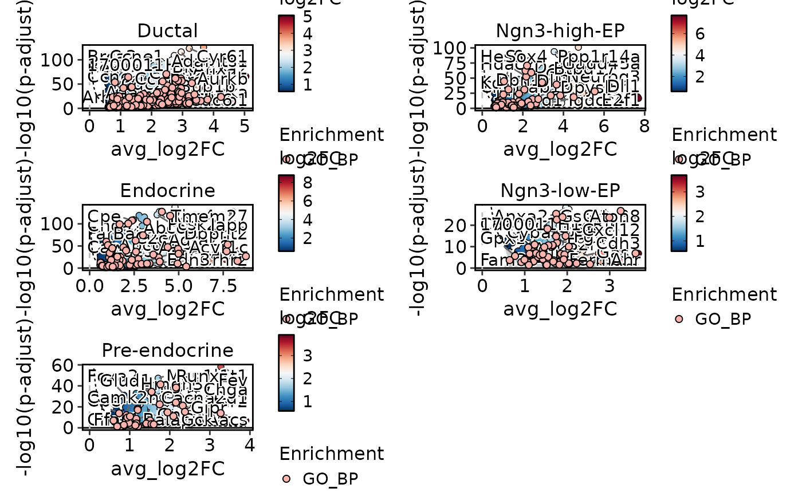

Generate a volcano plot based on differential expression analysis results.
Usage
VolcanoPlot(
srt,
group.by = NULL,
test.use = "wilcox",
res = NULL,
group_use = NULL,
DE_threshold = "avg_log2FC > 0 & p_val_adj < 0.05",
x_metric = NULL,
y_metric = NULL,
palette = "RdBu",
palcolor = NULL,
pt.size = 1,
pt.alpha = 1,
cols.background = "grey80",
cols.highlight = "black",
sizes.highlight = 1,
alpha.highlight = 1,
stroke.highlight = 0.5,
nlabel = 5,
features_label = NULL,
only.pos = FALSE,
label.by = c("p_val_adj", "p_val", "diff_pct", "avg_log2FC"),
label.fg = "black",
label.bg = "white",
label.bg.r = 0.1,
label.size = 4,
aspect.ratio = NULL,
xlab = NULL,
ylab = NULL,
theme_use = "theme_scop",
theme_args = list(),
combine = TRUE,
nrow = NULL,
ncol = NULL,
byrow = TRUE,
threshold_method = c("rectangular", "hyperbolic"),
hyperbola_c = 6,
annotate_enrichment = FALSE,
enrich_from = c("Enrichment", "GSEA", "GSVA"),
enrich_db = NULL,
enrich_terms = NULL,
enrich_top_terms = 3,
enrich_padj_cutoff = 0.05,
enrich_gsva_score_cutoff = NULL,
gsva_method = NULL,
enrich_nlabel = 15,
verbose = TRUE
)Arguments
- srt
A
Seuratobject orSummarizedExperimentobject containing the results of differential expression analysis.- group.by
Name of one or more meta.data columns to group (color) cells by.
- test.use
A character string specifying the type of statistical test to use. Default is
"wilcox".- res
A
data.frameordata.tablewith differential expression results. Whenresis provided,srtwill be ignored. The data.frame must contain columns:gene,group1(factor or character),avg_log2FC,p_val_adj, and optionallypct.1andpct.2for calculatingdiff_pct.- group_use
Groups to plot. Default is
NULL(all groups).- DE_threshold
A character string specifying the threshold for differential expression (used to highlight significant genes in all plot types). Default is
"p_val < 0.05"for sample-level methods ("edgeR"and"limma") and"avg_log2FC > 0 & p_val_adj < 0.05"otherwise.- x_metric
A character string specifying the metric to use for the x-axis (only for volcano plot). Default is
NULL, which uses"avg_log2FC"for sample-level methods ("edgeR"and"limma") and"diff_pct"otherwise.- y_metric
A character string specifying the metric to use for the y-axis. Options:
"p_val"or"p_val_adj". Default is"p_val"for sample-level methods ("edgeR"and"limma") and"p_val_adj"otherwise.- palette
Color palette name. Available palettes can be found in thisplot::show_palettes. Default is
"RdBu".- palcolor
Custom colors used to create a color palette. Default is
NULL.- pt.size
The size of the points. Default is
1.- pt.alpha
The transparency of the data points. Default is
1.- cols.background
A character string specifying the color for non-DE background points in volcano plots. Default is
"grey80".- cols.highlight
A character string specifying the color for highlighted points. Default is
"black".- sizes.highlight
The size of the highlighted points. Default is
1.- alpha.highlight
The transparency of the highlighted points. Default is
1.- stroke.highlight
The stroke width for the highlighted points. Default is
0.5.- nlabel
An integer value specifying the number of labeled points per group. Default is
5.- features_label
A character vector specifying the feature labels to plot. Default is
NULL.- only.pos
Whether to show only positive log2 fold-change results in differential expression visualizations. Default is
FALSE.- label.by
Metric used to select automatic labels when
features_label = NULL. Options are"p_val_adj","p_val","diff_pct", and"avg_log2FC". Smaller p-values are ranked first;diff_pctandavg_log2FCuse the strongest positive and negative effects within each group. Default is"p_val_adj".- label.fg
A character string specifying the color for the labels' foreground. Default is
"black".- label.bg
A character string specifying the color for the labels' background. Default is
"white".- label.bg.r
The radius of the rounding of the labels' background. Default is
0.1.- label.size
The size of the labels. Default is
4.- aspect.ratio
Aspect ratio of the panel. Default is
NULL.- xlab
A character string specifying the x-axis label.
- ylab
A character string specifying the y-axis label.
- theme_use
Theme to use for the plot. Default is
"theme_scop".- theme_args
A list of additional arguments to pass to the theme function. Default is
list().- combine
Whether to combine multiple plots into one. Default is
TRUE.- nrow
Number of rows for combined plots. Default is
NULL.- ncol
Number of columns for combined plots. Default is
NULL.- byrow
Whether to fill plots by row. Default is
TRUE.- threshold_method
Volcano significance threshold method. Options are
"rectangular"(legacy DE_threshold) or"hyperbolic"(|log2FC * -log10(padj)| > c). Default is"rectangular".- hyperbola_c
Numeric cutoff
cfor hyperbolic volcano threshold. Default is6.- annotate_enrichment
Whether to annotate enrichment-hit genes on volcano plots. Enrichment results are read from existing results in
srt@toolsonly. Default isFALSE.- enrich_from
Character vector specifying enrichment result source(s) to annotate. Options are
"Enrichment","GSEA","GSVA". Default isc("Enrichment", "GSEA", "GSVA").- enrich_db
Optional database filter for enrichment annotation, e.g.
"GO_BP"or"KEGG". Default isNULL.- enrich_terms
Optional whitelist of enrichment term IDs or names for annotation. Default is
NULL.- enrich_top_terms
Number of top enriched terms selected per source/group/database. Default is
3.- enrich_padj_cutoff
Adjusted p-value cutoff for
"Enrichment"and"GSEA"annotation. Default is0.05.- enrich_gsva_score_cutoff
Optional absolute GSVA score cutoff for
"GSVA"annotation. Default isNULL.- gsva_method
Optional GSVA method filter (e.g.
"gsva"or"ssgsea") when multiple GSVA tool slots exist. Default isNULL.- enrich_nlabel
Maximum number of enrichment-derived labels added per group. Labels from
features_labelare always retained. Default is15.- verbose
Whether to print the message. Default is
TRUE.
Examples
data(pancreas_sub)
pancreas_sub <- standard_scop(pancreas_sub)
#> ℹ [2026-06-28 05:18:51] Start standard processing workflow...
#> ℹ [2026-06-28 05:18:52] Checking a list of <Seurat>...
#> ! [2026-06-28 05:18:52] Data 1/1 of the `srt_list` is "unknown"
#> ℹ [2026-06-28 05:18:52] Perform `NormalizeData()` with `normalization.method = 'LogNormalize'` on 1/1 of `srt_list`...
#> ℹ [2026-06-28 05:18:52] Perform `FindVariableFeatures()` on 1/1 of `srt_list`...
#> ℹ [2026-06-28 05:18:53] Use the separate HVF from `srt_list`
#> ℹ [2026-06-28 05:18:53] Number of available HVF: 2000
#> ℹ [2026-06-28 05:18:53] Finished check
#> ℹ [2026-06-28 05:18:53] Perform `ScaleData()`
#> ℹ [2026-06-28 05:18:53] Perform pca linear dimension reduction
#> ℹ [2026-06-28 05:18:54] Use stored estimated dimensions 1:23 for Standardpca
#> ℹ [2026-06-28 05:18:54] Perform `Seurat::FindClusters()` with `cluster_algorithm = 'louvain'` and `cluster_resolution = 0.6`
#> ℹ [2026-06-28 05:18:54] Reorder clusters...
#> ℹ [2026-06-28 05:18:54] Skip `log1p()` because `layer = data` is not "counts"
#> ℹ [2026-06-28 05:18:54] Perform umap nonlinear dimension reduction
#> ✔ [2026-06-28 05:19:02] Standard processing workflow completed
pancreas_sub <- RunDEtest(
pancreas_sub,
group.by = "CellType"
)
#> ℹ [2026-06-28 05:19:03] Data type is log-normalized
#> ℹ [2026-06-28 05:19:03] Start differential expression test
#> ℹ [2026-06-28 05:19:03] Find all markers(wilcox) among [1] 5 groups...
#> ℹ [2026-06-28 05:19:03] Using 1 core
#> ⠙ [2026-06-28 05:19:03] Running for Ductal [1/5] ■■ 20% | ETA: 1s
#> ✔ [2026-06-28 05:19:03] Completed 5 tasks in 850ms
#>
#> ℹ [2026-06-28 05:19:03] Building results
#> ✔ [2026-06-28 05:19:04] Differential expression test completed
VolcanoPlot(
pancreas_sub,
group.by = "CellType",
ncol = 2
)
 VolcanoPlot(
pancreas_sub,
group.by = "CellType",
group_use = c("Ductal", "Endocrine"),
ncol = 2
)
VolcanoPlot(
pancreas_sub,
group.by = "CellType",
group_use = c("Ductal", "Endocrine"),
ncol = 2
)
 VolcanoPlot(
pancreas_sub,
group.by = "CellType",
DE_threshold = "abs(diff_pct) > 0.3 & p_val_adj < 0.05",
ncol = 2
)
VolcanoPlot(
pancreas_sub,
group.by = "CellType",
DE_threshold = "abs(diff_pct) > 0.3 & p_val_adj < 0.05",
ncol = 2
)
 VolcanoPlot(
pancreas_sub,
group.by = "CellType",
x_metric = "avg_log2FC",
y_metric = "p_val",
DE_threshold = "abs(avg_log2FC) > log2(1.5) & p_val < 0.05",
ncol = 2
)
VolcanoPlot(
pancreas_sub,
group.by = "CellType",
x_metric = "avg_log2FC",
y_metric = "p_val",
DE_threshold = "abs(avg_log2FC) > log2(1.5) & p_val < 0.05",
ncol = 2
)

VolcanoPlot(
pancreas_sub,
group.by = "CellType",
threshold_method = "hyperbolic",
hyperbola_c = 6,
ncol = 2
)
#> Warning: Removed 2 rows containing missing values or values outside the scale range
#> (`geom_line()`).
#> Warning: Removed 2 rows containing missing values or values outside the scale range
#> (`geom_line()`).
#> Warning: Removed 1 row containing missing values or values outside the scale range
#> (`geom_line()`).
#> Warning: Removed 11 rows containing missing values or values outside the scale range
#> (`geom_line()`).
#> Warning: Removed 5 rows containing missing values or values outside the scale range
#> (`geom_line()`).

pancreas_sub <- RunEnrichment(
pancreas_sub,
group.by = "CellType",
db = "GO_BP",
species = "Mus_musculus"
)
#> ℹ [2026-06-28 05:19:11] Start Enrichment analysis
#> ℹ [2026-06-28 05:19:11] Species: "Mus_musculus"
#> ℹ [2026-06-28 05:19:11] Loading cached: GO_BP version: 3.23.0 nterm:14957 created: 2026-06-28 04:16:26
#> ℹ [2026-06-28 05:19:13] Permform enrichment...
#> ℹ [2026-06-28 05:19:14] Using 1 core
#> ⠙ [2026-06-28 05:19:14] Running for 1 [1/5] ■■ 20% | ETA: 2s
#> ✔ [2026-06-28 05:19:14] Completed 5 tasks in 2.9s
#>
#> ℹ [2026-06-28 05:19:14] Building results
#> ✔ [2026-06-28 05:19:17] Enrichment analysis done
VolcanoPlot(
pancreas_sub,
group.by = "CellType",
threshold_method = "hyperbolic",
hyperbola_c = 6,
annotate_enrichment = TRUE,
enrich_from = "Enrichment",
enrich_db = "GO_BP",
ncol = 2
)
#> Warning: Removed 2 rows containing missing values or values outside the scale range
#> (`geom_line()`).
#> Warning: Removed 2 rows containing missing values or values outside the scale range
#> (`geom_line()`).
#> Warning: Removed 1 row containing missing values or values outside the scale range
#> (`geom_line()`).
#> Warning: Removed 11 rows containing missing values or values outside the scale range
#> (`geom_line()`).
#> Warning: Removed 5 rows containing missing values or values outside the scale range
#> (`geom_line()`).
